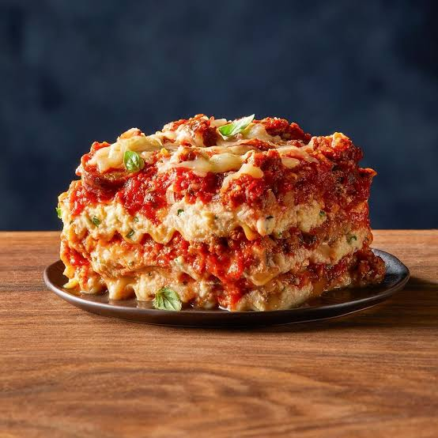

Lasagna
Home

Description
Classic homemade lasagna is a comforting baked pasta dish featuring alternating layers of wide flat noodles, rich meat or tomato sauce, and a creamy cheese blend
Ingredients
- Noodles: 9 to 12 lasagna noodles, either boiled or oven-ready.
- Meat Sauce: 1 pound of ground beef or a mix of beef and Italian sausage, cooked with diced onions, garlic, crushed tomatoes, and Italian herbs.
- Cheese Layer: A creamy mix of ricotta or cottage cheese, eggs, grated Parmesan, and shredded mozzarella.
Steps
- Make the meat sauce: Brown the ground meat and onions in a pan, add garlic, tomatoes, and spices, then let it simmer.
- Prepare the cheese: Mix the ricotta, Parmesan, eggs, and seasonings in a bowl.
- Assemble: Layer meat sauce, noodles, and the cheese mixture in a baking dish, repeating for three layers. Finish with extra mozzarella on top.
- Assemble: Layer meat sauce, noodles, and the cheese mixture in a baking dish, repeating for three layers. Finish with extra mozzarella on top.